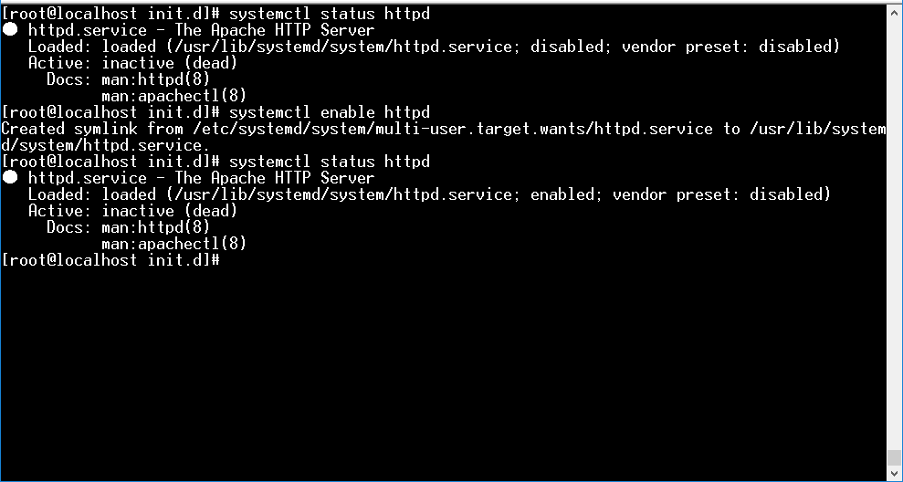

[CentOS] apacheをインストールする方法
こんにちは。明月です。
我々がサーバOSをインストールする理由はいつも動いているサーバプログラムを起動するためですね。その中で代表的なことがウェブサーバです。
ウェブサーバの種類は様々がありますが、その中で「IIS」と「apache」が有名ではないかと思いますね。
でも「IIS」の場合はLinux型ではなく、WindowサーバOSで動いているし、ウェブサーバと言っても実はASP.netとASPのアプリサーバというのが近いですね。
参考にウェブアプリサーバはブラウザとウェブサーバが通信する時に必要な応答ヘッダとボディを動的にパーシングするの役のサーバです。つまり、「IIS」の場合はWindowサーバOSので動いてるしウェブサーバとアプリサーバ機能があるウェブサーバです。
「apache」の場合はWindowとLinuxバージョン両方あります。基本的に「apache」だけにはアプリサーバ機能はありません。
なので静的なファイルを要請、応答することです。拡張機能で「PHP」をつけるとPHP言語はパーシングができます。
その後でウェブサーバはトラフィック分散機能、仮想機能などがありますが、それは別途で必要な時に投稿します。
これから「apache」をインストールしましょう。
yum list httpd
yum install httpd
インストールが完了するとサーバを起動しましょう。
service httpd start
ファイアウォールも設定しなければならないです。
firewall-cmd --permanent --zone=public --add-port=80/tcp
firewall-cmd --reload
firewall-cmd --list-all

これからブラウザを接続して下記通りに画面が出るとOKです。
後は、サーバOSが起動する時に自動にサーバが起動できるように設定をしましょう。
systemctl status httpd

サービスがdisabledになっていますね。
systemctl enable httpd
上のコマンドを実行すると「enable」に変わります。

そうするとサーバを再起動しても「apache」が起動します。環境設定パスは「/etc/httpd」です。
「/etc/httpd」の中には「conf」のディレクトリがありますが、そこで「httpd.conf」が「apache」の環境設定ファイルです。

- [Ubuntu] PHPをインストール、Composer設定する方法2019/11/13 07:32:21
- [Ubuntu] テーマ(Arc)を変更する方法(tweak)2019/11/12 07:32:13
- [Ubuntu] Apache2をインストールする方法2019/11/11 07:28:28
- [Ubuntu] 「acquire the dpkg frontend lock」のエラーを解決方法2019/11/10 22:19:34
- [Ubuntu] JavaインストールとEclipseをインストールする方法2019/11/08 07:29:55
- [Ubuntu] MariaDB(Mysql)をインストールする方法2019/11/07 07:50:58
- [Ubuntu] Chromeをインストールする方法2019/11/06 19:48:19
- [CentOS] YUMについて、YUMが出来ない場合処理方法2019/11/05 07:17:58
- [CentOS] MariaDB(Mysql)をインストール2019/11/04 18:35:10
- [CentOS] FTPインストールする方法(vsftpd)2019/11/01 07:29:57
- [CentOS] SAMBAインストール方法2019/10/30 07:38:57
- [CentOS] PHPインストールする方法2019/10/29 20:09:03
- [CentOS] ApacheとTomcatの連携2019/10/29 07:28:33
- [CentOS] Tomcat インストール方法2019/10/28 22:38:56
- [CentOS] Java インストール2019/10/28 00:22:32
- [PHP] Reflection - Class編2020/01/30 03:00:00
- [PHP] エラーページ処理方法(追加: ob_cleanとdie関数使用方法)2020/01/29 03:00:00
- [PHP] 分散設定ファイル(.htaccess) 使用方法2020/01/28 03:00:00
- [PHP] データベース(mariaDB)を連結して使う方法2020/01/24 03:00:00
- [PHP] IOに関して2020/01/23 03:00:00
- [PHP] requireとinclude、そして「@」の使用方法2020/01/22 03:00:00
- [PHP] Fatal及びNotice,、Warningメッセージ処理する方法2020/01/19 03:00:00
- [PHP] xDebug設定する方法2020/01/18 03:00:00
- [PHP] $_SERVER, $GLOBALS, $_GET, $_POST, $_REQUEST, $_COOKIE, $_SESSION, $_FILES, $_ENV(getenv())2020/01/17 03:00:00
- [PHP] データ確認関数(var_dump, debug_zval_dump, print_r)2020/01/16 03:00:00
- [PHP] 例外処理(try ~ catch ~ finally)2020/01/15 03:00:00
- [PHP] 配列とリスト(list)2020/01/14 03:00:00
- [PHP] インタフェースと抽象クラス、クラス継承、parent、this2020/01/13 03:00:00
- [PHP] functionとclass使用方法、アクセス修飾子、そしてstatic2020/01/09 23:35:27
- [PHP] 基本ページ作成方法と変数使用方法2020/01/06 23:44:20